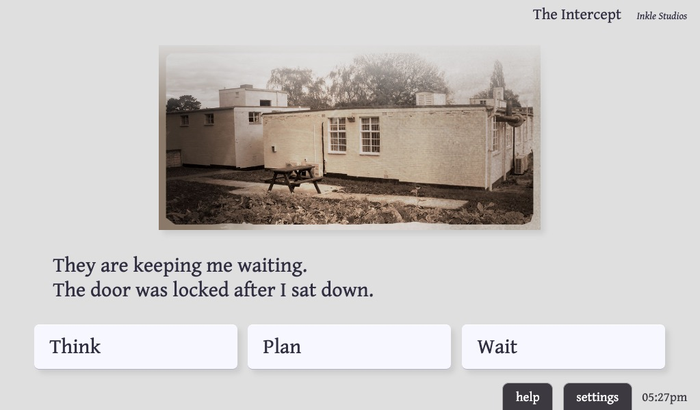
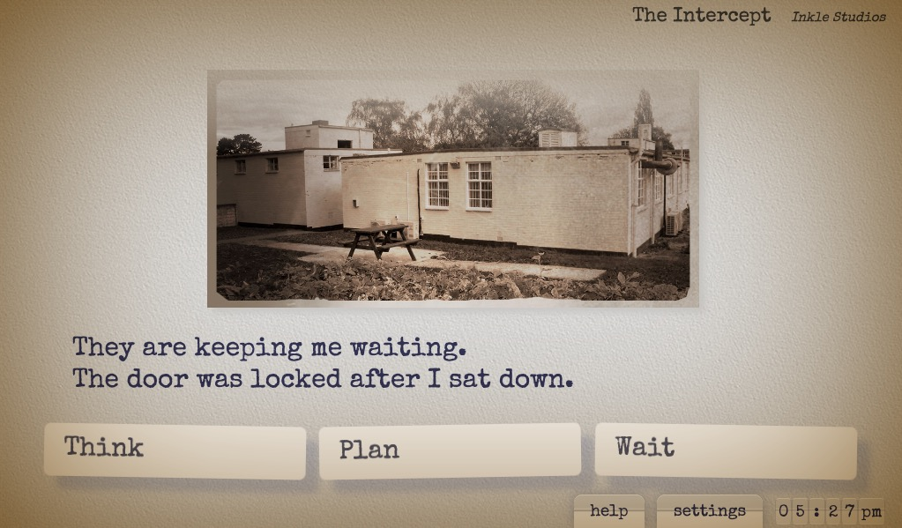

Alexa - Ink
Introduction
Ink is an open source interactive fiction engine made by Inkle Studios, used to drive hit games like 80 Days, Heaven's Vault and Overboard! It provides a great markdown like syntax for describing interaction flow, as well as extensive hooks to drive game client behavior outside of the story.
Alexa is a digital personal assistant that runs on a large variety of hardware, including the Echo and Fire TV line of Amazon devices. Alexa Skills is a mechanism to expand Alexa's capabilities, freely available to developers. Alexa customers can enable and pay for new skills in the Alexa Skill Store.
Alexa Ink is a template to easily combine the two to create an interactive audio/visual story that can be enjoyed on any Alexa enabled device. To create your own, you'll need to:
- Write an Ink story. Try the Inky editor, it's pretty awesome!
- Create a free Amazon account, if you don't have one yet.
- Use the Amazon Developer Portal to create a new skill using this template.
- Edit the skill to replace the example story with your own.
- Test your story, either in the simulator on the developer website, or on a real device.
- Publish your story for the world to enjoy!
todo: fill in details about hosting, add step by step hosted skill deployment.
Colophon
Alexa Ink honors the semi standardized ink convention of noting colophon information as global tags at the top of the story file. You should minimally indicate the #title and #author. These will be displayed on Alexa devices that have screens.
By default, when your story launches for the first time Alexa will announce the story using information from the colophon. You can replace this by including an optional #introduction tag with the text you'd like read out. You can also leave it empty to just delete the introduction.
When your story is launched again later, if it's been more than a few minutes since the last time, a welcome back message will play before the story resumes where the reader left off by repeating the last presentation. You can customize this one with a #resumption.
When your story ends, i.e. when there are no more options for the player to pursue, then Alexa will tack on a "The End" to the last turn's presentation, before offering the player the option to start over. You can customize this with a #ending.
There are a few automatically generated elements to the story presentation, including interstitial sound effects, and the visual chrome on devices with screens. You can select one of several styles to apply to your story with #style. More details below.
Here's an example colophon with all possible fields.
#title: The Intercept
#author: Inkle Studios
#introduction: This is the Intercept, an Inkle Studios story.
#resumption: Last time, on the Intercept.
#ending: The End.
#style: typewriter
Commands: Images, Audio, and more
You can embed additional presentation commands in your story that will alter how your story looks and sounds. These are uniformly indicated using using parentheses, where the first character in the parentheses is an exclamation mark. Any content inside these parentheses will not be printed or read out. Each parentheses may contain only one command, but you may include as many parenthesized commands as necessary on the same line.
To display an image, you'll need to find one online or host it in a visible place, and then just include the URL in a command. As long as there is a ".jpg" or ".png" filename in the URL, it'll be displayed. Note that the position of the command matters: the image will not be revealed until the text preceeding it in the line has been displayed first.
(! https://mywebsite.com/creepy-house.jpg ) The house sat a the end of a dirt road, surrounded by fields.
Similarly to play an audio file, you can include either a ".mp3" or ".ogg" URL in a command. Again: position matters, as the audio will not play until the preceeding text has been read. By default, the text that comes after will wait for the audio to complete. You can modify that timing with one of two optional parameters. Specify "delay" to indicate how much of the audio should be played, in seconds, before the subsequent content resumes. Specify "overlap" to specify that value relative to the end of the audio instead. For example:
// this line will wait until the creaking door sound is finished before continuing
You approach the house, and give the dodgy looking door a careful shove (! https://mywebsite.com/creaking-door.ogg) before walking in.
// this line will wait exactly 3.5 seconds before saying the next part over the top of the creaking door
You approach the house, and give the dodgy looking door a careful shove (! https://mywebsite.com/creaking-door.ogg delay=3.5) before walking in.
// this line will wait until 2 seconds seconds before the creaking door is done, to say the next part
You approach the house, and give the dodgy looking door a careful shove (! https://mywebsite.com/creaking-door.ogg overlap=2) before walking in.
If you'd like to include longer audio, like music or an ambiance track, then prefix your audio URL with the keyword "music". There can only be one music track playing at any one time, so each subsequent music command will fade out the old and fade in the new. Music tracks will loop until explicitly replaced. To stop playing music, you can issue the music command without a URL.
# title The Thrilling Story
=== start ===
(! https://mywebsite/media/totally-thrilling-intro.ogg)
You'll never believe this story, but I'm going to tell it to you anyway.
You're standing in front of the old Farmer house.
* [open the door]
You push through, and are greeted with an eerie silence (! music https://mywebsite/media/creepy-ambiance.ogg)
- It's dark inside, the air smells musty.
* [turn on the lights]
You flip the light switch by the door, which turns on disco lights and starts music playing? (! music https://mywebsite/media/disco-groove.ogg)
If you'd like to replace the Alexa reading of your story with pre recorded voice overs, you can do so by adding the audio URL for each line in a command prefixed with "vo". This instructs the system to display your text on screen, but replace it with the file in the audio stream.
=== start ===
(! https://mywebsite/media/totally-thrilling-intro.ogg)
You'll never believe this story, but I'm going to tell it to you anyway. (! vo https://mywebsite/media/intro-1.ogg)
You're standing in front of the old Farmer house. (! vo https://mywebsite/media/intro-2.ogg)
If you are using the Alexa Hosted Skills system, you can use its S3 bucket to host your image and audio files. If you do, prefix your folder and filename with "hosted://" instead. You can freely mix and match this with materials hosted on other websites.
=== start ===
(! hosted://music-stuff/totally-thrilling-intro.ogg)
(! hosted://creepy-house.jpg)
You'll never believe this story, but I'm going to tell it to you anyway. (! vo https://mywebsite/voice-overs/intro-1.ogg)
Alexa Ink will generally display text and images a little ahead of the narration, giving faster players something to follow, and the opportunity to skip ahead when they know where they're going. Occassionally this will interfere with your intended pacing, maybe ruin a punchline or distract from a dramatic moment. You can ask for the visual and audio presentation to wait for each other by adding a sync command.
What do you call a bagel that can fly? (!sync) (! airplane-bagel.jpg) A plain bagel!
Adding a paywall
Alexa Ink supports...
todo: explain the monetization scheme, paywall vars, etc
Styles
Alexa Ink ships with a few different presentation presets. As noted above, you can select which one should be active with a #style in your colophone.
#title: Steamy Times Aboard the Queen Elizabeth II
#style: romance
Following are the currently available styles. If you'd like to propose a new one, feel free to file a new issue at the github repo!
| minimal | This is the default style: clean, modern. |  |
| typewriter | It comes with a vintage typewriter font, and matching clacking keys. |  |
| hacker | It's a Unix system, I know this! |  |
| romance | This one is laid out in lavender with a flourish. Sound effects are dreamy. | |
| fantasy | Here be dragons. | |
| spacey | Welcome to the Starship Storyteller. Caution: adventure ahead. |
todo: fill in more details about the other styles